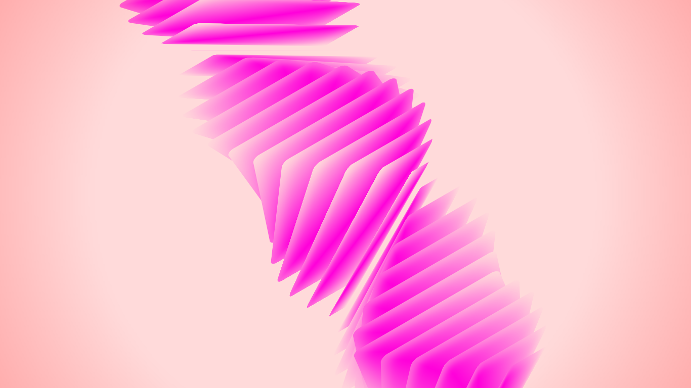

Maquetacion77 was born from a simple yet powerful conviction: web interfaces can always be “just a bit better.” In a digital landscape where websites often look identical due to pre-packaged frameworks, I enjoy designing custom web components from scratch, always striving for striking aesthetics.